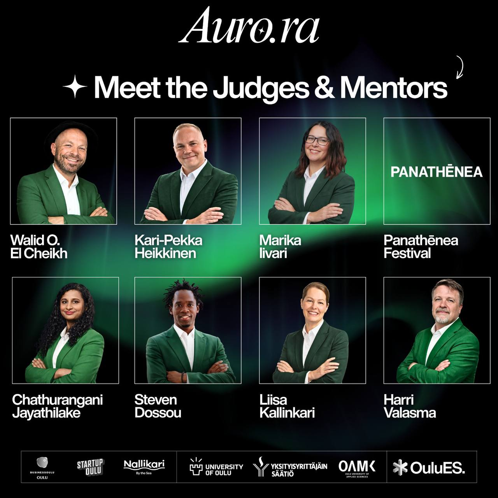
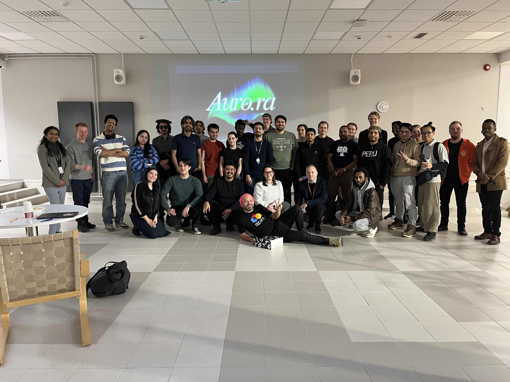
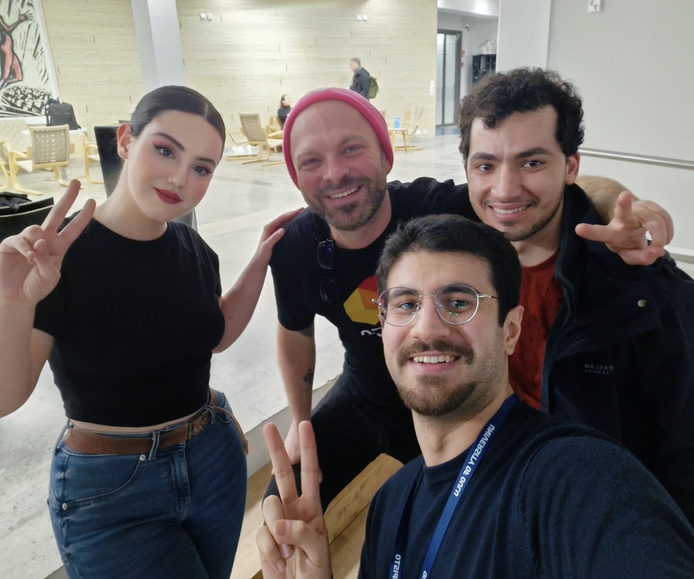

Competition · March 2026
🥇 AURO.RA Accelerathon — 1st Place
A 6-day accelerator and hackathon organized by the Oulu Entrepreneurship Society (OuluES). Competed against teams from across Oulu, working through ideation, prototyping, and a final pitch — finishing in 1st place.
Videos
Final Pitching of Our DemoAURO.RA Accelerathon · OuluES · March 2026
Judges Praised UsAURO.RA · March 2026
The Moment We Were Announced as WinnersAURO.RA · March 2026
Photos



